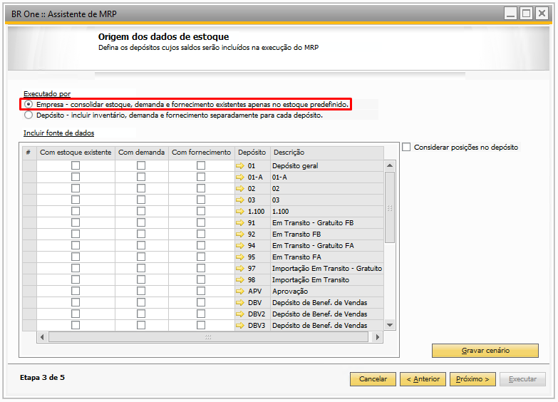
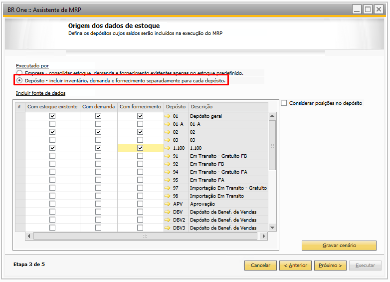
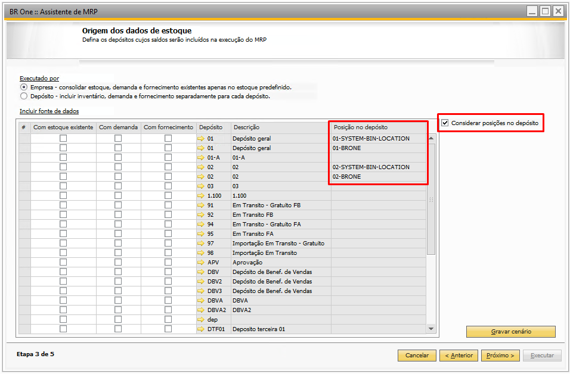

Etapa 3
Na ‘Etapa 3’, os depósitos poderão ser marcados ou desmarcados, de acordo com a necessidade do usuário. E poderão ser executados por:
Empresa
Depósito
{kind=link}
Ambas as execuções ‘Por Empresa’ e ‘Por Depósito’ poderão selecionar as fontes de dados:
Com estoque existente: Verifica o saldo inicial dos depósitos selecionados.
Com demanda: Verifica apenas os documentos de demanda para os depósitos selecionados (Pedido de venda, Nota fiscal de entrega futura e Previsão de Venda).
Com fornecimento: Verifica apenas os documentos de fornecimento para os depósitos selecionados (Solicitação de compra, pedido de compra, Nota fiscal de recebimento futuro e Ordem de produção).
Depósito: indica o depósito que o MRP irá utilizar nos cálculos.
Descrição: indica a descrição do depósito selecionado.
Executar por ‘Empresa’
Será analisado o estoque, as demandas e os suprimentos por empresa, ou seja, será analisada a soma dos depósitos de acordo com a empresa, e com isso, as recomendações serão realizadas sempre para o seu depósito em questão, e caso o depósito padrão não esteja correspondente à filial logada, é verificado na tela de ‘Configurações de depósitos para referência’, e caso não tenha a configuração, é recuperado o depósito padrão da filial logada para recomendação de estoque mínimo.
{kind=link}
Executar por ‘Depósito’
Será analisado o estoque, as demandas e os suprimentos por depósito unitário, ou seja, será analisado individualmente cada depósito, e com isso, as recomendações serão realizadas sempre para o seu depósito em questão.
{kind=link}
Considerar posições no depósito:
O parâmetro ‘Considerar posições no depósito’, quando marcado, obriga o MRP a considerar as quantidades dos depósitos por posição.
Ao habilitar o parâmetro ‘Considerar posições no depósito’, é adicionado a coluna ‘posição no depósito’ que indica o nome da posição para todos os depósitos que possuem posições configuradas.
{kind=link}